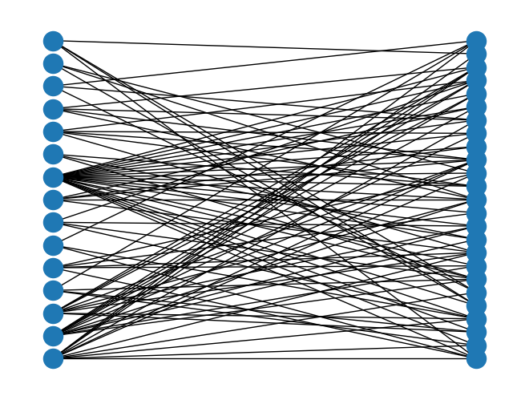
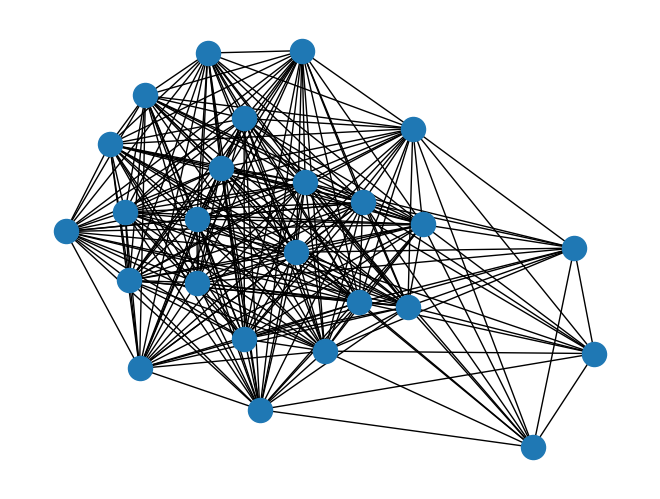

Bipartite Networks#
Bipartite networks, or affiliation networks, have two separate sets of nodes and are typically used to describe group affiliations. You’ll find the complete documentation on the NetworkX website.
Importing Bipartite Graphs#
import networkx as nx
import pandas as pd
# Note you will need a separate set of algorithms
from networkx.algorithms import bipartite
# Read in an edgelist
# Data from: http://konect.cc/networks/brunson_club-membership/
B = bipartite.read_edgelist("data/brunson_club-membership/out.brunson_club-membership_club-membership")
print(B)
Graph with 40 nodes and 95 edges
B.nodes(data=True)
NodeDataView({'person_1': {'bipartite': 0}, '1': {'bipartite': 1}, '2': {'bipartite': 1}, '3': {'bipartite': 1}, 'person_2': {'bipartite': 0}, '4': {'bipartite': 1}, 'person_3': {'bipartite': 0}, '5': {'bipartite': 1}, '6': {'bipartite': 1}, 'person_4': {'bipartite': 0}, '7': {'bipartite': 1}, '8': {'bipartite': 1}, 'person_5': {'bipartite': 0}, 'person_6': {'bipartite': 0}, '9': {'bipartite': 1}, '10': {'bipartite': 1}, '11': {'bipartite': 1}, 'person_7': {'bipartite': 0}, 'person_8': {'bipartite': 0}, '12': {'bipartite': 1}, '13': {'bipartite': 1}, 'person_9': {'bipartite': 0}, '14': {'bipartite': 1}, 'person_10': {'bipartite': 0}, 'person_11': {'bipartite': 0}, 'person_12': {'bipartite': 0}, 'person_13': {'bipartite': 0}, 'person_14': {'bipartite': 0}, '15': {'bipartite': 1}, 'person_15': {'bipartite': 0}, 'person_16': {'bipartite': 0}, 'person_17': {'bipartite': 0}, 'person_18': {'bipartite': 0}, 'person_19': {'bipartite': 0}, 'person_20': {'bipartite': 0}, 'person_21': {'bipartite': 0}, 'person_22': {'bipartite': 0}, 'person_23': {'bipartite': 0}, 'person_24': {'bipartite': 0}, 'person_25': {'bipartite': 0}})
# Get node sets for later:
bottom_nodes, top_nodes = bipartite.sets(B)
print(bottom_nodes)
{'person_18', 'person_21', 'person_20', 'person_23', 'person_1', 'person_7', 'person_15', 'person_10', 'person_17', 'person_5', 'person_22', 'person_9', 'person_16', 'person_4', 'person_13', 'person_12', 'person_2', 'person_24', 'person_6', 'person_25', 'person_3', 'person_14', 'person_19', 'person_11', 'person_8'}
Degree and Betweenness#
degree = bipartite.degree_centrality(B, top_nodes)
betweenness = bipartite.betweenness_centrality(B, top_nodes)
print(degree)
{'9': 0.44, '5': 0.44, '6': 0.36, '13': 0.16, '14': 0.2, '12': 0.12, '15': 0.16, '4': 0.2, '1': 0.84, '8': 0.12, '7': 0.2, '11': 0.16, '10': 0.12, '2': 0.12, '3': 0.16, 'person_18': 0.3333333333333333, 'person_20': 0.2, 'person_21': 0.2, 'person_23': 0.3333333333333333, 'person_1': 0.2, 'person_7': 0.2, 'person_15': 0.3333333333333333, 'person_10': 0.2, 'person_17': 0.3333333333333333, 'person_5': 0.2, 'person_22': 0.26666666666666666, 'person_9': 0.13333333333333333, 'person_16': 0.4, 'person_4': 0.2, 'person_12': 0.26666666666666666, 'person_13': 0.4666666666666667, 'person_2': 0.13333333333333333, 'person_24': 0.2, 'person_6': 0.26666666666666666, 'person_25': 0.2, 'person_3': 0.2, 'person_14': 0.3333333333333333, 'person_19': 0.3333333333333333, 'person_11': 0.13333333333333333, 'person_8': 0.26666666666666666}
Drawing#
nx.draw(B, pos=nx.bipartite_layout(B, top_nodes))

Projection#
people_projection = bipartite.weighted_projected_graph(B, bottom_nodes)
print(people_projection)
Graph with 25 nodes and 259 edges
nx.draw(people_projection)
